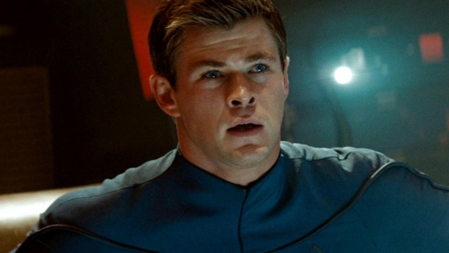

STAR TREK 4 Hakkında SOMUT Gelişmeler Var, Filme Yönetmen Bulundu!
Hatırlayacaksınız geçtiğimiz günlerde Zachary Quinto‘nun “Valla birden fazla Star Trek filmi geliştiriliyor” demesiyle birlikte şaşkınlıklardan şaşkınlık beğenmiş, neler olduğunu anlamakta zorlanmıştık. Şimdi elimizdekileri biraz daha karıştıran, ancak öte yandan da netleştirmeye vesile olan bir bilgi var: Star Trek 4‘ün yönetmeni belli oldu. Star Trek 4 derken, 2009’da J.J. Abrams ile başlayan Star Trek serisinin dördüncü filminden bahsediyoruz. Tarantino dünyamız hâlâ ayrı.
Mevcut paralel evrenciğimizin hikayesini devam ettirecek olan film S.J. Clarkson tarafından yönetilecek. Clarkson daha önceden detaylı bir uzun metraj deneyimi olmayan, fakat kara ekranda kendisini ispatlamış bir yönetmen. Heroes, Dexter, Jessica Jones ve Defenders‘da yönetmenlik görevini üstlenmiş olan Clarkson’ın 2010 yılında vizyona girmiş Toast isminde bir uzun metrajı da var. Clarkson için şüphesiz bu büyük bir mücadele olacak, fakat öte yandan zaten kim başa gelse onun için mücadele büyük olacaktı. Çünkü konu çok zor.

Şöyle, Abrams bunu daha önceden SDCC gibi organizasyonlarda doğruladığı için iç rahatlığıyla söylüyoruz: Film James Kirk‘ün babasıyla karşılaşmasını konu alacak. Babası derken, herhangi bir babası değil. İlk filmde Kirk’ün kahramanca vefat eden babasını o sıralarda henüz şöhretli olmayan bir Chris Hemsworth oynamıştı, hatırlıyor musunuz? Ha işte o hâli. Baya Hemsworth olarak. Zaman yolculuğu falan kullanacaklar. Abrams acayip heyecanlı, “güzel hikaye bulduk” falan diyor.
Peki güzel hikaye mi buldular, yoksa “Hemsworth çok popiyken, tekrar getirelim karakteri” diye mi harekete geçtiler bunu film biraz daha şekillenmeye başladığı zaman göreceğiz. Öte yandan, bu gelişmelerin Tarantino tarafından geliştirilmekte olan 17+ Star Trek filmiyle hiçbir ilgisi yok. O film büyük ihtimalle Abrams’ın kopardığı küçük evrencikte değil, bütün diğer Star Trek işlerinin geçtiği esas külliyatta top oynayacak. Bu ayrım halihazırda bulunduğu için izleyici olarak bize batmayacaktır. Ancak bir yandan bir noktada biri ötekini erteleyecek ya da etkileyecek illa ki. Onun için de bekleyelim, görelim……